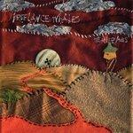
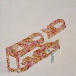
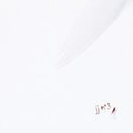

Music Reviews
-

Toro Y Moi Causers Of This
Toro Y Moi releases his debut full-length amid two peaks, the popular reign and critical boredom of still-infant subgenre chillwave. Or was that glo-fi? And what about shit-gaze? Seriously, I read an album-review classified as shit-gaze yesterday... Anyway, well after Causers Of This is finished and released, Toro Y Moi has his work cut out for him.
Ryan Pratt mediates... -

Freelance Whales Weathervanes
Weathervanes is too lacking in substance to make it more than an occasional indulgence (like a fried Twinkie) or a novelty album for snugglin'.
Nate Adams is well known for his cotton candy shits... -

Julianna Barwick Florine
Strikingly innovative, intensely private, surreally beautiful.
Michael Skinnider reviews... -

White Hinterland Kairos
After crafting a jazz aesthetic with their debut, the Portland duo switch to a synthesized template, an almost-unrecognizable reinvention that inverts the meaning of a sophomore slump.
Juan Edgardo Rodriguez reviews... -
Thee Silver Mt. Zion Memorial Orchestra Kollaps Tradixionales
Despairing, bleak, hopeless and defiant. Yay!
Alan Shulman reviews -

Lil Wayne Rebirth
More like Afterbirth.Ryan Faughnder reviews... -
Zu The Way of the Animal Powers (Reissue)
Out-of-print for five years, Zu’s The Way of the Animal Powers is being reintroduced to obscurity.
Sean Caldwell generalizes about jazz, noise and Zu... -

Shout Out Louds Work
If this album were a little worse, I could have written something like "Listening to Work feels like a job!" Then David would give me a big check and some girl would blow me, because puns are the best. Sadly, though, it's just a pretty good pop record.
Nate Adams only makes one "work" joke in the entire review, and you should be proud of him... -
Blair Die Young
Why die young when you've got your whole career ahead of you? In Blair's case, let's just hope she waits a little while longer.
Juan Edgardo Rodriguez digs this kind of introspective pop... -

jj jj n° 3
Swedish indie-pop enigma jj broke out last year, gaining notoriety with their cannabis-emblazoned full-length debut, jj n° 2. With their follow-up, jj n° 3, they won't be so lucky.
Sean Caldwell reviews...